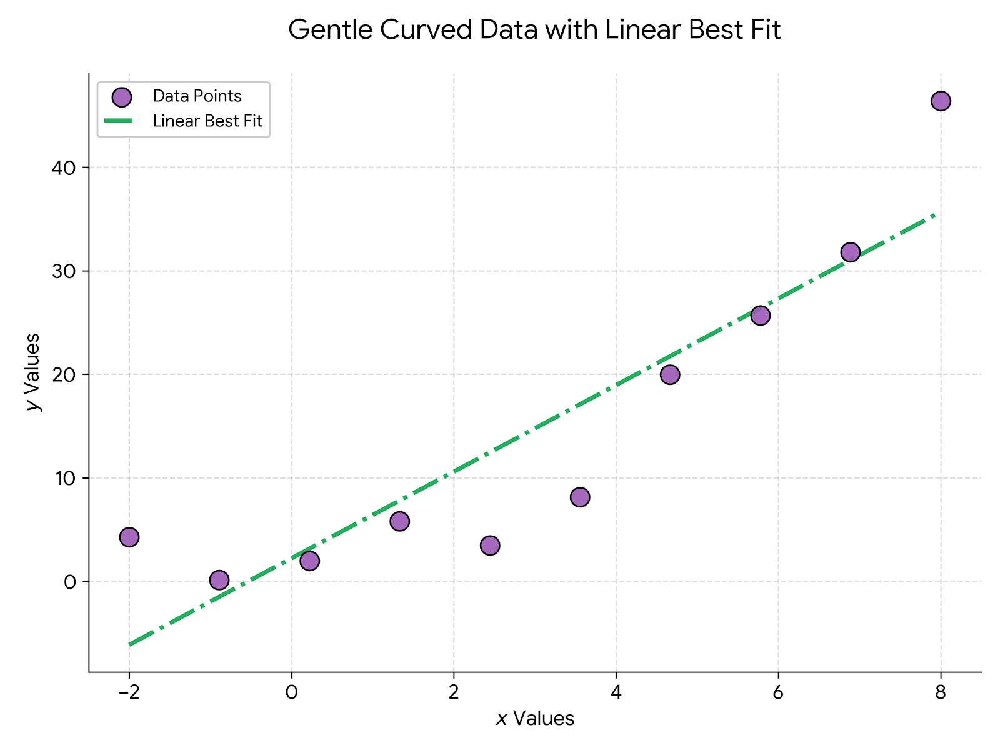
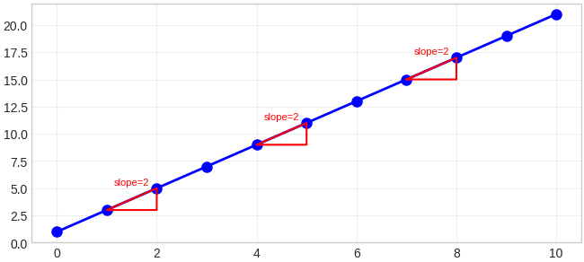
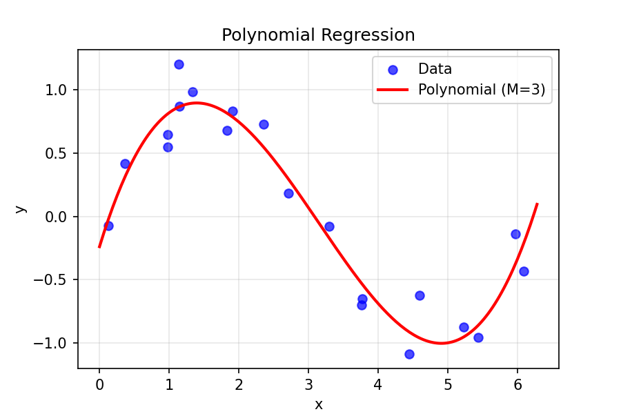
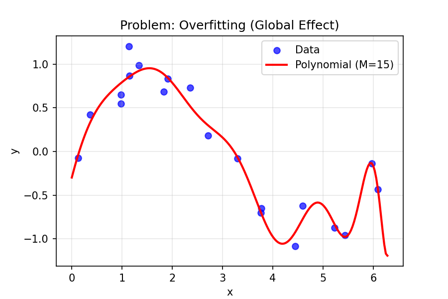
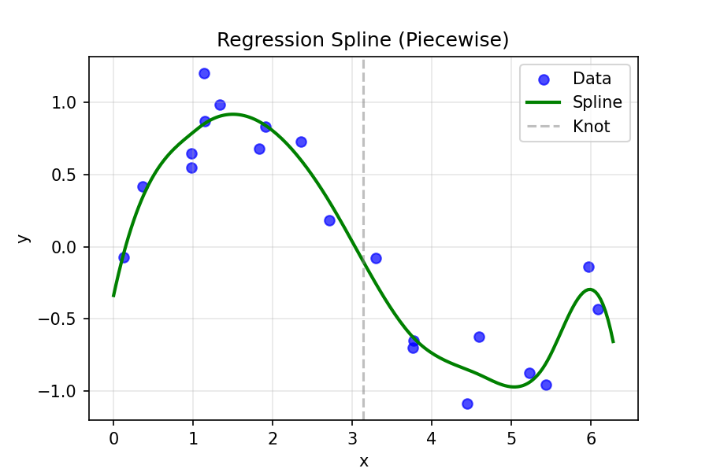
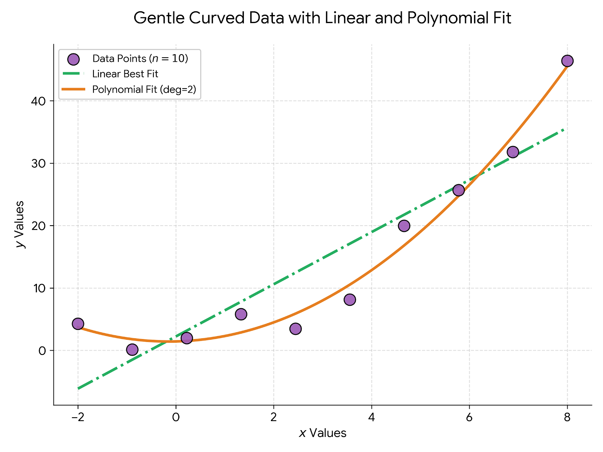
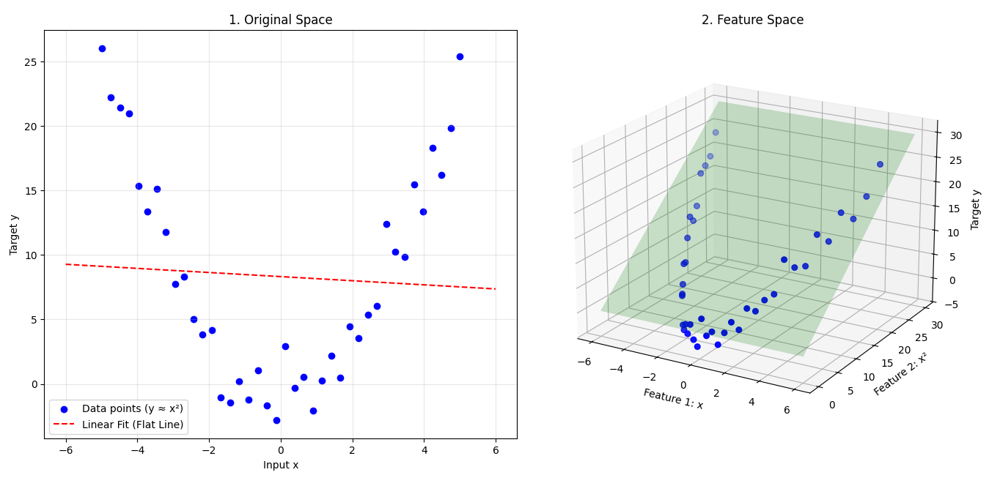

So, last month, I wrote a blog on Linear Regression. I tried to teach Linear Regression from first principles. It was fun to write and I wanted to continue writing blogs for two reasons:
- So, anyone can learn from it.
- It also helps me to solidify my understanding.
Last blog, we discussed on linear regression itself. How it came, how it connects to MLE, why we use MSE, also, the assumptions of linear regression. In this blog, I want to talk about the extensions of Linear Regression. I will talk about Linear Basis Functions, Regularizations, Bias-Variance Tradeoff, etc..
The problem with linear regression as we discussed is it is linear, meaning, it can only capture linear relationships between the features and the target variable. Consider the below plot, where the data points are generated from a non-linear function.

Non-linear Data with Linear Best Fit
The data points are kinda U-shaped but the best fit line couldn't capture the data points well.
So, to make our model fit the data better, we have to make it non-linear.
To understand non-linearity, first, let's understand what linearity means.
In the simplest terms, linearity assumes that the relationship between
our input(x) and our output(y) is constant.
If we increase x by 1 unit, y always changes by a fixed amount.
On a graph, this is a straight line.

Linearity
As you see in the image, the slope is same at every point, which means the relationship between x and y is constant. Non-linearity occurs when the rate of change isn't constant.
To make our model capture these non-linear data points, we can do it two ways:
- Make the architecture itself capture non-linear relationships.
- Transform the input features to create non-linear combinations.
The first one is what we do with Artificial Neural Networks (ANN). We make the architecture non-linear by adding non-linear activation functions. The second one is what we do in Linear Basis Functions. We transform the input features to create non-linear combinations.
Linear Basis Functions
In short, linear basis functions are: $$y(x,w) = w_0 + \sum_{j=1}^{M-1} w_j \phi_j(x)$$ where phi(x) are the basis functions.
We often add a addition dummy basis function phi_0(x) = 1 to account for the bias term w_0. So, the formula becomes: $$y(x,w) = w^T \phi(x)$$ where, w = (w0, .. wM-1)^T and phi(x) = (phi0(x), .. phiM-1(x)).
These basis functions can be anything, they can be polynomial, Gaussian, etc.. Take for example, the polynomial basis functions. We can transform our input features into polynomial features like: $$\phi_j(x) = x^j$$ So, our model becomes: $$y(x,w) = w_0 + w_1 x + w_2 x^2 + ... + w_{M-1} x^{M-1}$$ This allows our model to capture non-linear relationships between x and y. This is also called as polynomial regression.

One problem with polynomial regression is, these are global functions of the input variable. So, changes in one part of the input space can affect the entire function, which can lead to overfitting.

This can be solved by diving input space into smaller regions and fitting simple models to each region. This is called as piecewise polynomial regression or spline regression. The formula for spline regression is: $$y(x,w) = w_0 + w_1 x + w_2 x^2 + ... + w_{M-1} x^{M-1} + \sum_{k=1}^{K} w_{M+k} (x - \xi_k)^p$$ where, xi are the knot points that divide the input space into smaller regions.

So, using the above basis functions, we can write a simple polynomial regression code to fit the above non-linear data points, which we introduced at the beginning of the blog.

So, by this point, you may have two doubts:
- How is a linear model able to fit non-linear data points?
- Why is it still called linear model if it can fit non-linear data points?
I will explain them one by one.
How is a linear model able to fit non-linear data points?
The reason is, we are transforming the input features into higher dimensions using the basis functions.
So, in the original input space, the relationship between x and y is non-linear, but in the transformed feature space, the relationship is still linear.
Take the image for example.

Here, the basis function used is phi(x) = [1, x, x^2]. So, we have transformed our 1D input feature x into a 2D feature space with features phi1(x) = x and phi2(x) = x^2. For example, take this simple dataset, y = x^2 + 1.
- For x=1, y=2
- For x=2, y=5
- For x=3, y=10
- For x=1, phi(x) = [1, 1, 1]
- For x=2, phi(x) = [1, 2, 4]
- For x=3, phi(x) = [1, 3, 9]
Why is it still called linear model if it can fit non-linear data points?
The reason is, the model is still linear in terms of the parameters w.
The non-linearity is only in terms of the input features, but the relationship between the parameters and the output is still linear.
And, if you see the above image, the data points lie on a flat plane in the feature space.
Only, the line has transformed into plane because we have two features now, phi1(x) and phi2(x).
If we had say, 100 features, the data points would lie on a 100-dimensional hyperplane.